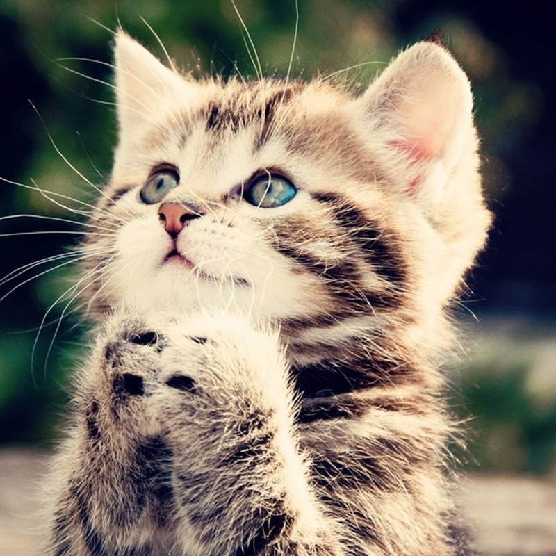

Одомашнивание кошки произошло примерно 9500 лет назад на Ближнем Востоке в районе Плодородного полумесяца (условное название региона с повышенным количество осадков в зимние месяцы), где зародились и развивались древнейшие человеческие цивилизации. Язык кошки при лакании жидкости вытягивается со скоростью 1 метр в секунду. В отличие от собак, язык кошки только касается поверхности жидкости, а не проникает в неё. Затем язык устремляется вверх и увлекает за собой столбик жидкости. В настоящее время в мире насчитывается около 600 миллионов домашних кошек. Отличительная черта строения глаза кошки, характерная для многих млекопитающих — наличие мигательной перепонки (третье веко). Его можно увидеть, когда кошка спит с приоткрытыми глазами или чувствует усталость. Если третье веко видно постоянно, в том числе, когда кошка бодрствует, это в большинстве случаев может быть признаком болезни. Большинство кошек способны родить от одного до девяти котят в одном помёте. Самый большой из известных помётов состоял из 19 котят, 15 из которых выжили. Самой долгоживущей кошкой из всех когда-либо зарегистрированных считается Крим Пафф, прожившая 38 лет и 3 дня (1967-2005). Кошки превосходно видят в условиях слабого освещения, однако, вопреки распространённому заблуждению, в абсолютной темноте они видеть не могут. Вибриссы (в обиходе — усы) у кошек являются специализированными органами чувств, выполняющими тактильную функцию. Вибриссы кошке ни в коем случае нельзя удалять, так как этим она фактически будет лишена своей «системы ориентации и навигации» в пространстве. В то время как в большинстве стран чёрная кошка считается символом несчастья, в Великобритании и Австралии, они, наоборот, рассматриваются как животные, приносящие удачу. Обоняние у кошек примерно в 14 раз сильнее человеческого, что позволяет им чувствовать запахи, о которых человек даже не подозревает.
Переслать
Удалить
Это Спам!
Прочитано

Команда Яндекс.Почты
Как читать почту с мобильного
6 июл
Команда Яндекс.Почты
Как читать почту с мобильного
6 июл
Яндекс
Соберите всю почту в этот ящик
6 июл